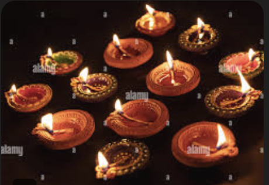

Welcome to the celebration of diverse and vibrant festivals from across India!
Diwali is one of the most important festivals in India. It symbolizes the victory of light over darkness and good over evil.
Holi is celebrated with vibrant colors and joyous festivities across the country. It marks the arrival of spring.
Pongal is celebrated in South India, especially in Tamil Nadu, as a thanksgiving to the Sun God for a bountiful harvest.
| Festival | Region | Month |
|---|---|---|
| Diwali | All over India | October/November |
| Holi | North and Central India | March |
| Pongal | Tamil Nadu | January |
More on Indian Festivals | Jump to Pongal section | Email us | Call us | Learn More (Internal Link)